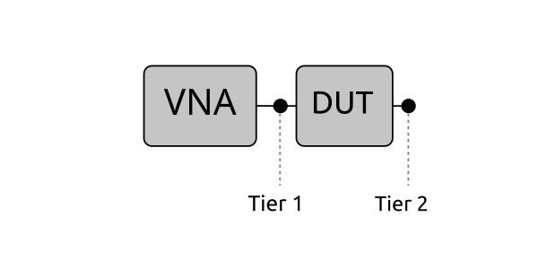
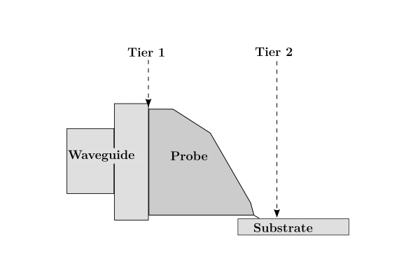
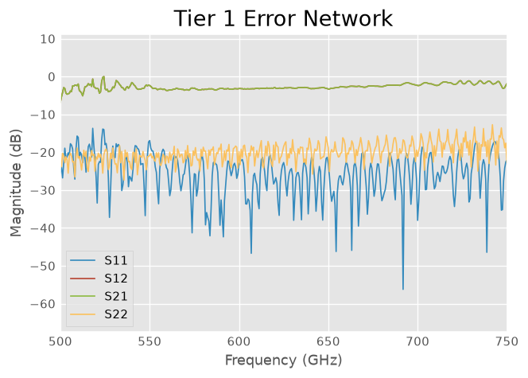
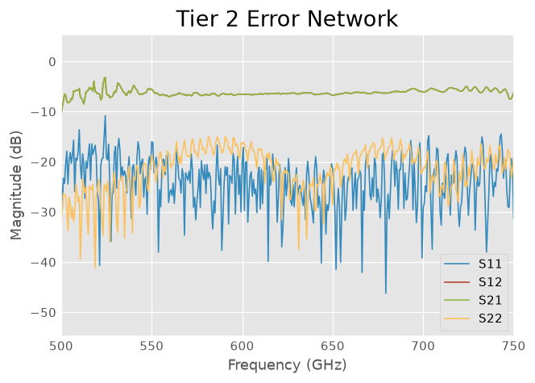

One Port Tiered Calibration#
Intro#
A one-port network analyzer can be used to measure a two-port device, provided that the device is reciprocal. This is accomplished by performing two calibrations, which is why its called a tiered calibration.
First, the VNA is calibrated at the test-port like normal. This is called the first tier. Next, the device is connected to the test-port, and a calibration is performed at the far end of the device, the second tier. A diagram is shown below,

This notebook will demonstrate how to use skrf to do a two-tiered one-port calibration. We’ll use data that was taken to characterize a waveguide-to-CPW probe. So, for this specific example the diagram above looks like:

Some Data#
The data available is the folders 'tier1/' and 'tier2/'.
[1]:
!ls {"oneport_tiered_calibration/"}
images probe.s2p tier1 tier2
(if you dont have the git repo for these examples, the data for this notebook can be found here)
In each folder you will find the two sub-folders, called 'ideals/' and 'measured/'. These contain touchstone files of the calibration standards ideal and measured responses, respectively.
[2]:
!ls {"oneport_tiered_calibration/tier1/"}
ideals measured
The first tier is at waveguide interface, and consisted of the following set of standards
short
delay short
load
radiating open (literally an open waveguide)
[3]:
!ls {"oneport_tiered_calibration/tier1/measured/"}
ds.s1p load.s1p ro.s1p short.s1p
Creating Calibrations#
Tier 1#
First defining the calibration for Tier 1
[4]:
import matplotlib.pyplot as plt
import skrf as rf
from skrf.calibration import OnePort
from skrf.io.general import read_all_networks
%matplotlib inline
rf.stylely()
tier1_ideals = read_all_networks('oneport_tiered_calibration/tier1/ideals/')
tier1_measured = read_all_networks('oneport_tiered_calibration/tier1/measured/')
tier1 = OnePort(measured = tier1_measured,
ideals = tier1_ideals,
name = 'tier1',
sloppy_input=True)
tier1
[4]:
OnePort Calibration: 'tier1', 500.0-750.0 GHz, 401 pts, 4-standards
Because we saved corresponding ideal and measured standards with identical names, the Calibration will automatically align our standards upon initialization. (More info on creating Calibration objects this can be found in the docs.)
Similarly for the second tier 2,
Tier 2#
[5]:
tier2_ideals = read_all_networks('oneport_tiered_calibration/tier2/ideals/')
tier2_measured = read_all_networks('oneport_tiered_calibration/tier2/measured/')
tier2 = OnePort(measured = tier2_measured,
ideals = tier2_ideals,
name = 'tier2',
sloppy_input=True)
tier2
[5]:
OnePort Calibration: 'tier2', 500.0-750.0 GHz, 401 pts, 5-standards
Error Networks#
Each one-port Calibration contains a two-port error network, that is determined from the calculated error coefficients. The error network for tier1 models the VNA, while the error network for tier2 represents the VNA and the DUT. These can be visualized through the parameter 'error_ntwk'.
For tier 1,
[6]:
tier1.error_ntwk.plot_s_db()
plt.title('Tier 1 Error Network')
[6]:
Text(0.5, 1.0, 'Tier 1 Error Network')

Similarly for tier 2,
[7]:
tier2.error_ntwk.plot_s_db()
plt.title('Tier 2 Error Network')
[7]:
Text(0.5, 1.0, 'Tier 2 Error Network')

De-embedding the DUT#
As previously stated, the error network for tier1 models the VNA, and the error network for tier2 represents the VNA+DUT. So to determine the DUT’s response, we cascade the inverse S-parameters of the VNA with the VNA+DUT.
In skrf, this is done as follows
[8]:
dut = tier1.error_ntwk.inv ** tier2.error_ntwk
dut.name = 'probe'
dut.plot_s_db()
plt.title('Probe S-parameters')
plt.ylim(-60,10)
[8]:
(-60.0, 10.0)

You may want to save this to disk, for future use,
dut.write_touchstone()
[9]:
!ls {"probe*"}
probe.s2p
[ ]: